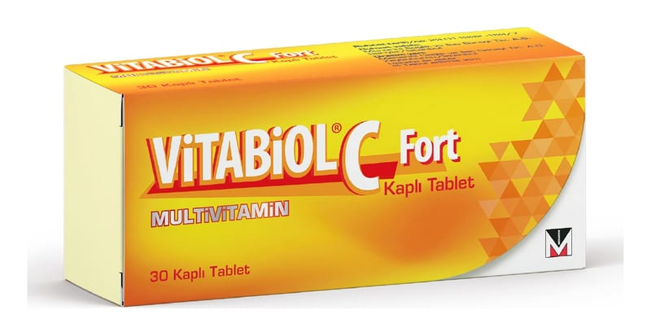

Vitabiol C Fort Kaplı Tablet, 30 Adet

Ne için kullanılır
KT · Bölüm 1VİTABİOL C-FORT, turuncu renkli, yuvarlak, bikonveks kaplı tablet şeklinde bir üründür. Vücut için gerekli olan bazı vitaminleri ve diğer maddeleri içermektedir. VİTABİOL C-FORT suda eriyen vitaminlerin gerekli olduğu B-kompleksi ve C vitamini eksikliğine bağlı bozukluklarda, tedaviye yardımcı olarak kullanılır.